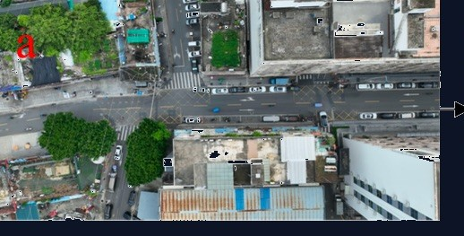
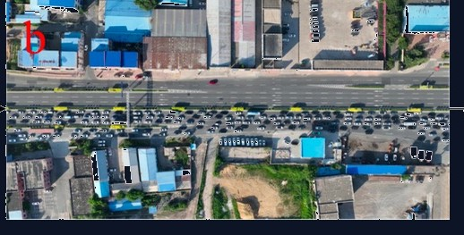
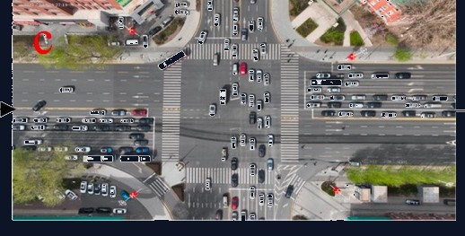
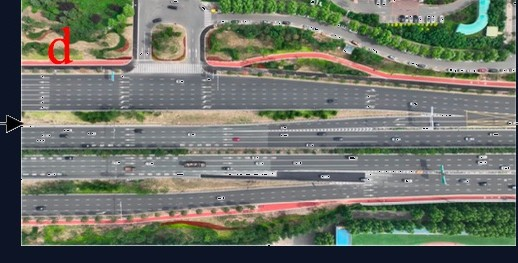
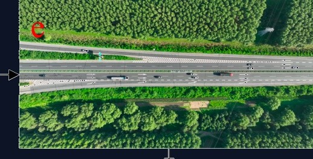
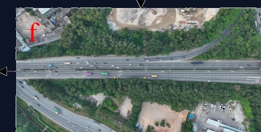
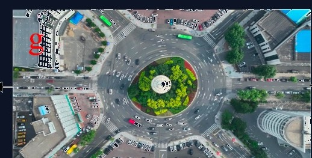
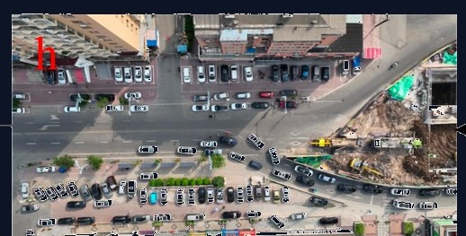
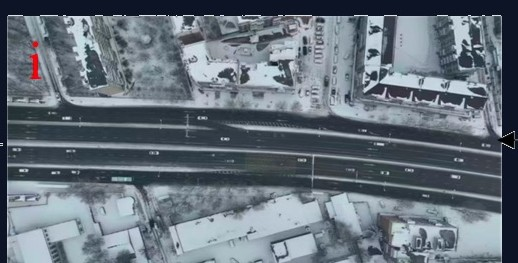
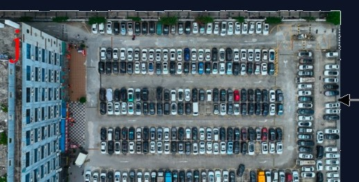

全球规模领先的航测自然驾驶数据集，从鸟瞰视角捕捉真实交通交互行为。
智能驾驶需要两条参考线——一条来自极限，一条来自日常。两条线之间，就是智能驾驶该有的样子。
源自场地测试与法规要求（UN R157、ISO 34502），覆盖极端工况——这是绝对不能突破的硬底线。
源自自然驾驶数据，捕捉千万级驾驶者在99%以上日常场景中的真实行为——定义舒适性和通行效率的软参考。
鸟瞰视角轨迹数据，涵盖完整运动学参数，支持ISO 34502场景提取。










典型城市通勤驾驶旅程——我们的数据覆盖从出发到到达的全部场景类型
降低自然驾驶研究的使用门槛，面向学术研究免费开放。
一个答案——自然驾驶数据——五个落地方向。
用数据驱动的阈值替代经验猜测，为ADAS/AD系统设计和参数标定提供依据。
基于千万级轨迹的P25-P75百分位基线，场景差异化、统计有据，而非专家拍脑袋。
用代表性自然驾驶参数（P5-P95）填补现行标准中的量化空白。
自然驾驶数据为"分母"，事故数据为"分子"，计算真实场景的风险暴露率。
将人类驾驶行为模型部署为车端实时参考系统，持续评估驾驶性能。
驭研科技依托于吉林大学自动驾驶安全联合实验室，主要研究成果源于多个项目的持续研发和投入，包括科研项目（如：自动驾驶汽车关键安全场景数据库开发及利用、基于无人机的低空信息获取技术应用与产业化），以及与大疆车载及卓驭科技开展应用课题（如：自动驾驶系统安全核心标准预研、基于端到端的高级别自动驾驶系统安全分析与评价），相关成果已经在多家主机厂的辅助驾驶系统量产开发中得到应用。